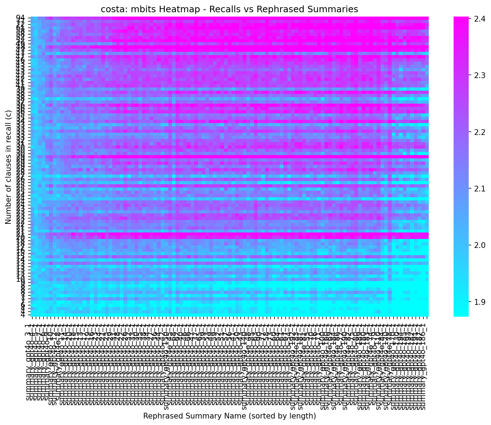
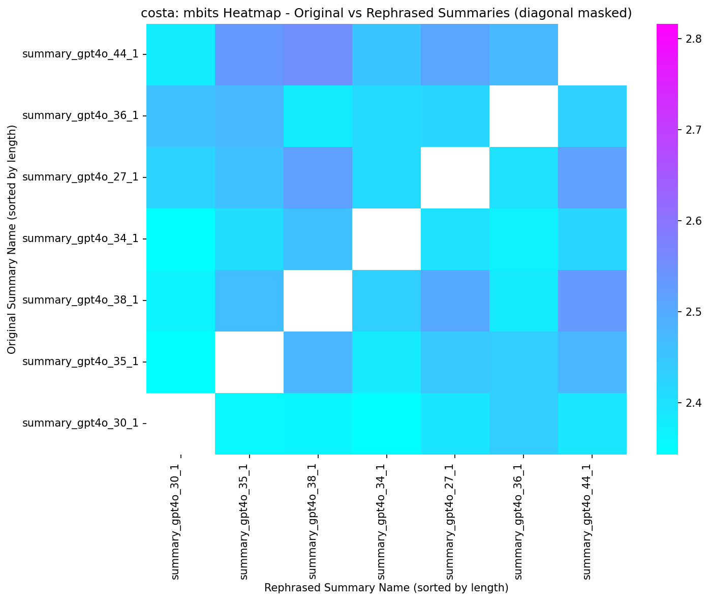

Meaningful Bits Heatmap Analysis
Overview
These heatmaps visualize the amount of information (measured in "meaningful bits" or mbits)
transferred between different text representations. Each cell in the heatmap represents the mbits value for a specific pair,
where darker colors (blue) indicate lower information content and brighter colors (red/pink) indicate higher information content.
Heatmap 1: Recalls vs Rephrased Summaries
Recalls vs Rephrased Summaries

This heatmap shows how much information each recall provides when predicting each rephrased summary.
- X-axis (columns): Rephrased summaries, sorted from shortest to longest text length
- Y-axis (rows): Recalls, represented by their maximum clause ID, sorted from highest to lowest (recalls with more clauses appear at the top)
This ordering helps identify whether there are systematic relationships between recall complexity (number of clauses),
summary length, and information transfer.
Heatmap 2: Original Summaries vs Rephrased Summaries
Original Summaries vs Rephrased Summaries

This heatmap shows how much information each original summary provides when predicting each rephrased summary.
- X-axis (columns): Rephrased summaries, sorted from shortest to longest text length
- Y-axis (rows): Original summaries, sorted from longest to shortest text length (lowest at bottom)
- Diagonal cells: Masked (white/uncolored) because they represent original summaries vs their own rephrased versions
This visualization helps identify cross-summary information relationships and whether rephrased versions capture
information from other original summaries beyond their own source.
Visualization Techniques
To ensure the heatmaps are readable despite wide value ranges, we apply two key techniques:
-
Log Scale Transformation: Values are transformed using a base-10 logarithmic scale (
log10).
This is essential because mbits values can span several orders of magnitude. The log transformation compresses this range
while preserving relative differences, making both small and large values visible on the same color scale.
-
Percentile-Based Normalization: The color scale is bounded using the 5th and 95th percentiles of the
log-transformed values from the recalls vs rephrased summaries heatmap. This approach prevents extreme outliers from
dominating the colormap and ensures that the majority of the data (90% of values) is mapped to the full color range,
improving contrast and making patterns more apparent. Both heatmaps use the same color scale bounds
to enable direct visual comparison.
Interpretation
- Color intensity reflects the magnitude of information transfer (after log transformation)
- Horizontal patterns may indicate which summaries capture information from many recalls or original summaries
- Vertical patterns may reveal which recalls or original summaries are particularly informative for multiple summaries
- Outliers (values beyond the 5th–95th percentile range) are clamped to the color scale bounds but may represent
particularly high or low information transfer relationships
Note: These visualizations help identify which pairs exhibit strong information relationships and whether these
relationships correlate with structural features like recall complexity or summary length. The shared color scale between the two
heatmaps allows for direct comparison of information transfer magnitudes across different types of relationships.